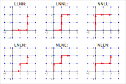

Seção 2.6 O Princípio da Reflexão
Subseção 2.6.1 Passeios Sobre o Reticulado
Existe uma classe de problemas em análise combinatória que consiste em determinar a quantidade de caminhos de um ponto \(A(a,b)\) até \(B(c,d)\text{,}\) em um reticulado, sob algumas condições. Como por exemplo:
Exemplo 2.6.3.
Uma partícula está sobre o reticulado. Ela só pode fazer dois tipos de movimentos:
- Estando sobre o ponto \((m,n)\) se move para o ponto \((m,n+1)\text{;}\)
- Estando sobre o ponto \((m,n)\) se move para o ponto \((m+1,n)\text{.}\)
Determine o número de caminhos da origem \(O(0,0)\) até o ponto \(A(a,b)\text{.}\)
Solução.
Chamamos o primeiro tipo de movimento de "para o Norte" e o denotaremos com uma letra \(N\text{,}\) e o segundo de "para o Leste" e o denotaremos por uma letra \(L\text{.}\) Com esta notação, temos uma bijeção entre os caminhos dessa partícula no reticulado e os anagramas formados por \(a\) letras \(L\) e por \(b\) letras \(N\text{,}\) por meio da seguinte associação: Toda vez que a partícula faz o movimento \((n,m)\to (n+1,m)\text{,}\) escrevemos \(L\) e toda vez que a partícula faz o movimento \((n,m)\to (n,m+1)\text{,}\) escrevemos \(N\text{.}\)
Vamos ilustrar a ideia na figura abaixo:

Pelo princípio da bijeção, calcular a quantidade de caminhos no reticulado do ponto \(O(0,0)\) até o ponto \(A(a,b)\) é o mesmo que calcular o número de anagramas com \(a\) letras \(L's\) repetidas e \(b\) letras \(N's\) repetidas, o que é obtido calculando
\begin{equation*}
PR_{a+b}^{a,b}=\dfrac{(a+b)!}{a!b!} = \displaystyle C_{a+b}^{a}\text{.}
\end{equation*}
Subseção 2.6.2 O Princípio da Reflexão
Definição 2.6.5.
O princípio da reflexão consiste em determinar o número de caminhos da origem \(O(0,0)\) até o ponto \(A(n,k)\text{,}\) de modo que os caminhos fiquem sempre abaixo da diagonal \(y=x\text{,}\) isto é, eles podem tocar, mas não podem cruzar.
Definição 2.6.6.
Chamamos de caminho bom no reticulado, se o caminho não cruza a diagonal, e de caminho ruim se o caminho cruza a diagonal. Veja um exemplo de cada tipo na Figura 2.6.2, na Figura 2.6.11.(a) e na Figura 2.6.11.(b).
Definição 2.6.8.
Seja \(R_1\) a reflexão dos pontos de um reticulado em relação à reta \(y=x+1\text{,}\) observe que \(R_1* P(r, s) = Q(s-1,r+1)\text{.}\) Na Figura 2.6.9, veja que a reflexão \(R_1\) leva a seta que liga \(P(2,2)\) à \(\tilde{P}(3,2)\) na seta que liga \(Q(1,3)\) à \(\tilde{Q}(1,4)\text{.}\)
Proposição 2.6.10.
A quantidade de caminhos ruins de \(O(0,0)\) até \(A(n,k)\) é igual ao número total de caminhos de \(O(0,0)\) até \(B(k-1,n+1)\text{.}\)
Demonstração.
Seja \(C_1\) o conjunto dos caminhos ruins de \(O\) até \(A\) e \(C_2\) o conjunto dos caminhos de \(O\) até \(B\text{.}\) Primeiramente, observe que se \(k>n\text{,}\) o ponto A estaria acima da diagonal \(y=x\text{,}\) então não haveria caminhos bons, só os ruins. Logo, vamos supor que \(k\leq n\text{.}\)
Seja \(P\) um caminho ruim de \(O\) até \(A\text{,}\) isto é, \(P\in C_1\text{,}\) como ele é um caminho ruim, por definição, esse caminho cruza a reta \(y=x\) pelo menos uma vez. Aplicando a reflexão \(R_1\) aos pontos de \(P\text{,}\) após o primeiro cruzamento, obtemos um caminho de \(O\) até \(B\text{.}\) Como \(P\) é um caminho arbitrário, concluímos que cada caminho de \(C_1\) é levado, dessa maneira, em um caminho de \(C_2\text{,}\) logo \(\#C_1\leq\#C_2\text{.}\)
Veja um exemplo na Figura 2.6.11.(a) e na Figura 2.6.11.(b) abaixo.

Reciprocamente, tomando um caminho \(Q\) de \(O\) até \(B\text{,}\) isto é \(Q\in C_2\text{,}\) ele necessariamente toca na diagonal \(y=x+1\text{,}\) uma vez que a ordenada de \(B\) é maior que a abscissa. Aplicando a reflexão \(R_1\text{,}\) a partir do primeiro cruzamento em relação à reta \(y=x+1\text{,}\) obtemos um caminho que termina em A. Ou seja, verificamos que todo caminho de \(C_2\) é levado em um caminho de \(C_1\text{.}\) Portanto, \(\#C_2\leq\#C_1\text{.}\)
Da propriedade da tricotomia dos números reais, se \(\#C_1\leq\#C_2\) e \(\#C_2\leq\#C_1\text{,}\) concluímos que \(\#C_1=\#C_2\text{.}\)
Proposição 2.6.12.
A quantidade de caminhos ruins de \(O\) até \(A(n,k)\) é \(C_{n+k}^{n+1}.\)
Demonstração.
Pela Proposição 2.6.10, o número de caminhos ruins de \(O(0,0)\) até \(A(n,k)\) é igual à quantidade de caminhos de \(O(0,0)\) até \(B(k-1,n+1)\text{,}\) sem restrições, ou seja, é o número de anagramas com os L’s repetidos \(k-1\) vezes e os N’s repetidos \(n+1\) vezes, que pode ser calculado por
\begin{equation*}
PR_{k-1+n+1}^{k-1, n+1} = \frac{(k-1+n+1)!}{(k-1)!(n+1)!} = \frac{(n+k)!}{(n+1)!(k-1)!} =C_{n+k}^{n+1},
\end{equation*}
como queríamos demonstrar.
Teorema 2.6.13. (Princípio da Reflexão).
Sejam \(n,k\in\mathbb{Z}^+\) com \(n>k\text{.}\) A quantidade de caminhos da origem \(O(0,0)\) até o ponto \(A(n,k)\) que ficam abaixo da reta \(y=x\) é dada por
\begin{equation*}
\frac{n-k+1}{n+1}C_{n+k}^{n}.
\end{equation*}
Demonstração.
Queremos calcular a quantidade de caminhos bons da origem \(O(0,0)\) até o ponto \(A(n,k)\text{.}\) Para tanto, vamos calcular o total e subtrair o número de caminhos ruins. O total de caminhos é dado por \(PR_{n+k}^{n, k}=C_{n+k}^{n}\text{.}\) E pela Proposição 2.6.12, sabemos que o número de caminhos ruins é dado por \(C_{n+k}^{n+1}\text{.}\) Assim,
\begin{equation*}
C_{n+k}^{n}-C_{n+k}^{n+1}=\frac{n-k+1}{n+1}C_{n+k}^{n}.
\end{equation*}
Tecnologia 2.6.14.
Abaixo, definimos uma função, que calcula o número de caminhos bons do ponto \(O(0,0)\) até o ponto \(A(n,k)\text{.}\)
Tecnologia 2.6.15.
Digite uma posição no reticulado e clique no botão "Update" para gerar um reticulado, um caminho aleatório e caso esse caminho seja ruim, obtenha também a reflexão deste caminho em relação a reta \(y=x+1\text{,}\) a partir do primeiro ponto que toca nessa reta.
Subseção 2.6.3 Números de Catalan
Definição 2.6.17.
No Teorema 2.6.13 (Princípio da Reflexão), o caso particular em que \(k=n\) é conhecido como números de Catalan, ou seja, os números
\begin{equation*}
C_n=\displaystyle\frac{1}{n+1}C_{2n}^n,
\end{equation*}
são conhecidos como números de Catalan (ou Catalão).
Tecnologia 2.6.18.
O Sage possui um método específico para calcular os números de Catalan. Basta escolher o valor de \(n\) e usar o método conforme o código a seguir.
Exemplo 2.6.19.
Anteriormente, no Exemplo 2.6.3, vimos a bijeção entre os caminhos da origem até o ponto \(A(a,b)\text{,}\) com os anagramas formados por \(a\) letras \(L\) e \(b\) letras \(N\text{.}\) Neste momento, é natural perguntar: Qual é a relação entre estes anagramas e os números de Catalan?
Solução.
Apresentamos os números de Catalan como a quantidade de caminhos da origem até o ponto \(A(n,n)\) de maneira que cada um desses caminhos nunca ultrapasse a diagonal \(y=x\text{,}\) ou seja, a cada momento a quantidade de movimentos "para o norte" deve ser sempre menor ou igual que a quantidade de movimentos "para o leste". Assim, por meio da bijeção já apresentada no Exemplo 2.6.3, concluímos que um caminho que é solução do problema de Catalan para o reticulado está associado aos anagramas com \(n\) letras \(L\) e \(n\) letras \(N\) de modo que ao lermos da esquerda para a direita a cada momento, a quantidade de letras \(L\) será maior ou igual a quantidade de letras \(N\text{.}\) Vejamos que para \(n=3\text{,}\) o anagrama \(LLNLNN\) é uma palavra válida para o problema de Catalan, enquanto \(LNNLNL\) não é válida.
Exemplo 2.6.20.
Um caminho de Dyck é um caminho de comprimento \(2n\text{,}\) no plano cartesiano, do ponto \((0, 0)\) ao ponto \((2n, 0)\text{.}\) No qual, em cada passo, saímos do ponto \((m,n)\) para \((m+1, n+1)\) ou \((m+1, n-1)\text{,}\) com a condição adicional de que o caminho nunca fica abaixo do eixo \(x\text{.}\) Quantos são os caminhos de Dyck?
Solução.
Observe que se a cada passo de \((m,n)\) para \((m+1, n+1)\) associarmos uma letra "L" e a cada passo de \((m,n)\) para \((m+1, n-1)\) associarmos uma letra "N", temos uma associação dos caminhos de Dyck com os anagramas do Exemplo 2.6.19 que acabamos de ver. O qual tem sua cardinalidade determinada pelos números de Catalan.
Tecnologia 2.6.21.
Os caminhos de Dyck podem ser plotados no Sage, basta usar o método DyckWord, tendo como entrada uma lista de zeros e uns, na qual cada 1 representa um passo de \((m,n)\) para \((m+1, n+1)\) e cada 0 representa um passo de \((m,n)\) para \((m+1, n-1)\text{.}\) Além disso, é necessário adicionar o comando .plot() para que o Sage retorne o respectivo caminho de Dyck. No exemplo a seguir o parâmetro aspect_ratio=1 foi adicionado apenas para que os eixos fiquem com a mesma proporção.
Exercícios 2.6.4 Exercícios
1.
Existem valores de \(n\) e \(k\) tais que a quantidade de caminhos bons é igual ao número de caminhos ruins?
Resposta.
Sim, \(n=2k-1\text{.}\)
Solução.
Basta igualar o número de caminhos bons com o número de caminhos ruins e encontrar \(n\) em função de \(k\text{.}\) Então,
\begin{align*}
\frac{n-k+1}{n+1}C_{n+k}^{n}=\amp~C_{n+k}^{n+1}\\
\frac{(n-k+1)}{n+1}\cdot \frac{(n+k)!}{n!k!} = \amp~ \frac{(n+k)!}{(n+1)!(k-1)!}\\
\frac{(n-k+1)}{(n+1)!k(k-1)!}=\amp~\frac{1}{(n+1)!(k-1)!}\\
n-k+1=\amp~k\\
n=2k-1.
\end{align*}
2.
Seja \(R_i\) a reflexão dos pontos de um reticulado em relação à reta \(y=x+i\text{.}\) Determine a refexão \(R_i\) e justifique.
Resposta.
\(R_i*A(r,s) = B(s-i, r+i)\text{.}\)
Solução.
Para encontrar a reflexão \(R_i\text{,}\) podemos encontrar a projeção de um ponto arbitrário \(A(r,s)\) na reta \(y=x+i\text{,}\) em seguida aplicamos uma translação, na vertical ou na horizontal. O sentido do deslocamento dependerá do caso e o total transladado será igual a distância entre o ponto original e a projeção do ponto na reta.

Caso \(s\lt r:\) Fazemos a interseção da reta \(y=s\) com a reta \(y=x+i\) e obtemos \(x=s-i\text{.}\) Agora, transladamos o ponto \(C(s-i, s)\) verticalmente no total de \(r-s+i\) unidades para cima. A reflexão é dada por \(R_i*A(r,s) = B(s-i, r+i)\text{.}\)
Caso \(s>r:\) Fazemos a interseção da reta \(x=r\) com a reta \(y=x+i\) e obtemos \(y=r+i\text{.}\) Agora, transladamos o ponto \(C(r, r+i)\) horizontalmente no total de \(s-r-i\) unidades para direita. A reflexão é dada por \(R_i*A(r,s) = B(s-i, r+i)\text{.}\)
Caso \(s=r:\) Basta observar que \(R_i*A(s,s+i) = B(s, s+i)\text{,}\) ou seja, os pontos da reta \(y=x+i\) são pontos fixos.
Ligando os pontos \(A, B, C\text{,}\) obtemos um triângulo isósceles na qual, a reta \(y=x+i\) contém a bissetriz do ângulo \(A\widehat{C}B\text{.}\) Portanto, \(R_i*A(r,s) = B(s-i, r+i)\) é de fato a reflexão procurada.
3.
Refaça o princípio da reflexão no caso em que os caminhos não possam nem tocar a diagonal \(y=x\text{.}\)
Solução 1.
Quantidade total de caminhos: A quantidade de caminhos da origem até o ponto \(A(n,k)\) é
\begin{equation*}
PR_{n+k}^{n, k}=C_{n+k}^{n}.
\end{equation*}
Quantidade de caminhos ruins: Note que o ponto \(O(0,0)\) pertence a reta \(y=x\text{.}\) Logo, precisamos ajustar nosso conceito de caminho ruim. Vamos considerar que um caminho é ruim se ele toca na reta \(y=x\text{,}\) mas o ponto de interseção é diferente do ponto \(O(0,0)\text{.}\) Assim, podemos classificar os caminhos ruins em dois tipos.
- 1º Tipo: o caminho vai do ponto \(O(0,0)\) até o ponto \(A(n,k)\) com o primeiro passo para cima. Assim, para contar o número desses caminhos, basta contar o número de caminhos do ponto \(Q(0,1)\) até o ponto \(A(n,k)\text{:}\)\begin{equation*} PR_{n+k-1}^{n,k-1}. \end{equation*}
- 2º Tipo: o caminho vai do ponto \(O(0,0)\) até o ponto \(R_0*A(n,k)=B(k,n)\) com o primeiro passo para a direita. Para contar o número desses caminhos, basta contar o número de caminhos do ponto \(P(1,0)\) até o ponto \(B(k,n)\text{:}\)\begin{equation*} PR_{n+k-1}^{k-1, n}. \end{equation*}


Portanto, pelo Princípio Aditivo, o total de caminhos ruins é dado por
\begin{equation*}
PR_{n+k-1}^{n,k-1}+PR_{n+k-1}^{k-1, n} = 2\cdot PR_{n+k-1}^{n,k-1}=2\cdot C_{n+k-1}^n.
\end{equation*}
Quantidade de caminhos bons: Para contar o número de caminhos bons, basta calcular a diferença entre o número total de caminhos e o número total de caminhos ruins:
\begin{equation*}
PR_{n+k}^{n, k} - 2\cdot PR_{n+k-1}^{n,k-1} = \frac{n-k}{k}\cdot C_{n+k-1}^n.
\end{equation*}
Solução 2.
Quantidade total de caminhos: A quantidade de caminhos da origem até o ponto \(A(n,k)\) é
\begin{equation*}
PR_{n+k}^{n, k}=C_{n+k}^{n}.
\end{equation*}
Quantidade de caminhos bons: Observe que a reflexão será em relação a reta \(y=x\text{,}\) portanto a reflexão será \(R_0*A(n,k)=B(k,n)\text{.}\) Assim, para um caminho ser bom, ele precisa dar o primeiro passo para a direita, mas nem todo caminho que dá o primeiro passo para a direita é um caminho bom.


Para contar os caminhos bons, vamos contar todos os caminhos que iniciam no ponto \(P(1,0)\) e chegam no ponto \(A(n,k)\text{,}\) depois vamos contar todos os caminhos ruins que iniciam no ponto \(P(1,0)\) e também chegam no ponto \(A(n,k)\text{.}\) A diferença entre essas quantidades será o número de caminhos bons.
- O número de caminhos de \(P(1,0)\) até \(A(n,k)\) é\begin{equation*} PR_{n+k-1}^{n-1, k} = C_{n+k-1}^{n-1}. \end{equation*}
- O número de caminhos ruins de \(P(1,0)\) até \(A(n,k)\) é igual ao número de caminhos de \(P(1,0)\) até \(R_0*A(n,k)=B(k,n)\text{,}\) ou seja,\begin{equation*} PR_{n+k-1}^{k-1, n} = C_{n+k-1}^n. \end{equation*}
Finalmente, o número de caminhos bons de \(P(1,0)\) até \(A(n,k)\) é igual a
\begin{equation*}
C_{n+k-1}^{n-1} - C_{n+k-1}^n = \frac{n-k}{k}\cdot C_{n+k-1}^n.
\end{equation*}
Quantidade de caminhos ruins: A quantidade de caminhos ruins de \(P(1,0)\) até \(A(n,k)\) é igual a quantidade total de caminhos, menos a quantidade de caminhos bons:
\begin{equation*}
C_{n+k}^n - \frac{n-k}{k}\cdot C_{n+k-1}^n = 2C_{n+k-1}^n.
\end{equation*}
4.
Numa fila de cinema, \(m\) pessoas têm notas de \(R$ 5,00\) e \(n\) pessoas têm notas de \(R$10,00\text{,}\) com \(n\lt m\text{.}\) A entrada custa \(R$5,00\text{.}\)
- Quais são as filas possíveis?
- Quantas são as filas que terão problemas de troco se a bilheteria começar a trabalhar sem troco?
- Quantas são as filas que terão problemas de troco se a bilheteria começar a trabalhar com duas notas de \(R$5,00\text{?}\)
Resposta.
- \(\displaystyle (m+n)!\)
- \(\displaystyle m!\times n!\times C_{m+n}^{m+1}\)
- \(\displaystyle m!\times n! \times C_{m+n}^{m+3}\)
Solução.
- O número de filas possíveis é o número de maneiras de ordenar \(m+n\) pessoas, ou seja, é \((m+n)!\text{.}\)
- Considere um reticulado, na qual o eixo \(x\) é referente as pessoas notas de \(R$5,00\) e o eixo \(y\) é referente as pessoas com notas de \(R$10,00\text{.}\) Pela Proposição 2.6.12, o número de maneiras escolher as posições das pessoas com notas de \(R$5,00\) e de \(R$10,00\) é \(C_{m+n}^{m+1}\text{.}\) Uma vez feita essa escolha, podemos ordenar as pessoas de \(m!\times n!\) maneiras. Logo, no total, o número de filas que terão problemas de troco é\begin{equation*} m!\times n!\times C_{m+n}^{m+1}\text{.} \end{equation*}
- Basta aplicar a mesma ideia do item anterior, mas com a reflexão \(R_3*P(m,n)=Q(n-3, m+3)\text{,}\) deduzida do Exercício 2.6.4.2. Utilizando a mesma ideia da Proposição 2.6.12, vamos contar o número de caminhos da origem até o ponto \(B(n-3, m+3)\text{.}\) Este número é\begin{equation*} PR_{m+n}^{n-3, m+3}=\frac{(m+n)!}{(n-3)!(m+3)!}=C_{m+n}^{m+3}. \end{equation*}Agora, basta multiplicar o número anterior pelo número de maneiras de ordenar as pessoas. Portanto, a resposta é\begin{equation*} m!\times n! \times C_{m+n}^{m+3}. \end{equation*}
Nota 2.6.28.
O princípio da reflexão, também é conhecido como "O princípio da reflexão de André" (Andre’s reflection principle), devido a sua utilização na solução do Problema da Eleição ("The Ballot Problem"). O qual enunciamos abaixo. Esse princípio possui várias generalizações e ainda pesquisado atualmente, o que pode ser visto em [6.18] e [6.19].
5.
Em uma eleição há dois candidatos A e B. Se o candidato \(A\) teve \(a\) votos e o candidato \(B\) teve \(b\) votos com \(a>b.\) Quantas são as marchas de apuração:
- Possíveis?
- Nas quais o candidato \(A\) permanece sempre em vantagem ou empatado com o candidato \(B\text{?}\)
- Nas quais o candidato \(A\) permanece sempre em vantagem em relação ao candidato \(B\text{?}\)
Resposta.
- \(\displaystyle PR_{a+b}^{a, b}\)
- \(\displaystyle \frac{a-b+1}{a+1}C_{a+b}^a\)
- \(\displaystyle \frac{a-b}{b}\cdot C_{a+b-1}^a\)
Solução.
- O número de marchas possíveis é dado por \(PR_{a+b}^{a, b}\text{.}\)
- O número de marchas, na qual o cadidato \(A\) permanece sempre em vantagem ou empatado com o candidato \(B\) é dado pelo número de caminhos bons da origem até o ponto \(P(a,b)\text{,}\) ou seja, é\begin{equation*} \frac{a-b+1}{a+1}C_{a+b}^a. \end{equation*}
- Usando a ideia do Exercício 2.6.4.3, o número de marchas, na qual o cadidato \(A\) permanece sempre em vantagem em relação o candidato \(B\) é dado pelo número de caminhos bons do ponto \(P(1,0)\) até o ponto \(Q(a,b)\text{,}\) sem que o caminho toque na reta \(y=x\text{.}\) Pelo Exercício 2.6.4.3, a resposta é\begin{equation*} \frac{a-b}{b}\cdot C_{a+b-1}^a. \end{equation*}
6.
Mostre que o número de Catalan, \(C_n\text{,}\) conta o número de expressões contendo \(n\) pares de parenteses que estão corretamente emparelhados. Por exemplo, para \(n=3\text{,}\)
\begin{equation*}
((())), \quad (()()), \quad (())(), \quad ()(()), \quad ()()().
\end{equation*}
Solução.
No Exemplo 2.6.20, mostramos que o número de caminhos de Dyck, de comprimento \(2n\text{,}\) é dado por \(C_n\text{.}\) É suficiente exibir uma correspondência biunívoca entre os caminhos de Dyck e as expressões contendo \(n\) pares de parenteses que estão corretamente emparelhados.
Para cada caminho de Dyck, cada vez que o passo for de \((m,n)\) para \((m+1, n+1)\text{,}\) abra um parêntese e cada vez que o passo for de \((m,n)\) para \((m+1, n-1)\) feche um parêntese. Dessa maneira, como os caminhos de Dyck não cruzam o eixo \(x\text{,}\) em cada expressão correspondente, a quantidade de parênteses abrindo será maior ou igual que a quantidade de parênteses fechando. Além disso, o ponto inicial e o ponto final dos caminhos de Dyck estão separados por de \(2n\) passos e estão no eixo \(x\text{,}\) portanto a expressão correspondente conterá \(n\) pares de parênteses corretamente emparelhados.
Reciprocamente, para cada expressão corretamente emparelhada contendo \(n\) pares de parênteses, fazendo a leitura da esquerda para a direita da expressão dada, construa o caminho de Dyck correspondente da seguinte maneira: Dê um passo de \((m,n)\) para \((m+1, n+1)\text{,}\) sempre que houver um parêntese abrindo, e dê um passo de \((m,n)\) para \((m+1, n-1)\text{,}\) sempre que houver um parêntese fechando. Assim, como a quantidade de parênteses abrindo é sempre maior ou igual que a quantidade de parênteses fechando, o caminho construído sempre ficará acima do eixo \(x\text{.}\) O primeiro parêntese será do tipo "(", garantindo que o primeiro passo seja de \((0,0)\) para \((1,1)\text{.}\) Como as expressões estão corretamente emparelhadas e contêm \(n\) pares de parênteses, o último parêntese será do tipo ")" e o caminho correspondente chegará no ponto \((2n,0)\text{.}\)
Observação: No Sage, a lista contendo todas as expressões de \(n\) pares de parênteses corretamente emparelhados pode ser gerada com o método \(\verb|DyckWords|\text{.}\) Para exibir a representação em parênteses, basta usar o método \(\verb|print|\text{:}\)